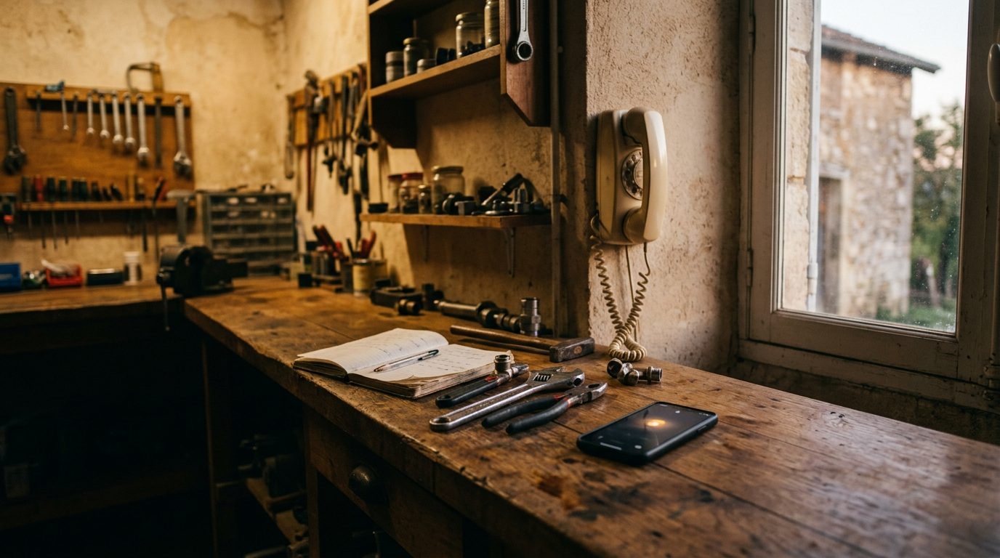

01
Vérifier
Date de coupure et ligne actuelle
On vérifie avec vous la date de coupure de votre commune et votre ligne actuelle.

Fixe Fidèle · Fin du réseau cuivre
Le réseau cuivre d'Orange s'arrête commune par commune. Gardez votre numéro historique : nous le basculons en téléphonie IP et y branchons une standardiste IA qui répond à chaque appel.
Ce qui change
Calendrier publié par Orange et encadré par l'Arcep.
Maintenant
À vérifier
31 janv. 2027
Coupure
Fin 2030
Votre numéro n'est pas perdu. La portabilité permet de le conserver en passant sur une offre fibre ou IP.
L'outil de l'État s'intitule « La fermeture du réseau cuivre dans votre commune ».
L'offre
Vos clients composent toujours le même numéro.
24 h/24, 7 j/7, même quand vous êtes sur un chantier ou en rendez-vous.
Qui appelle, pour quoi, urgence ou pas, adresse.
Prend un rendez-vous ou un message.
Un résumé par SMS et par email juste après l'appel.
Vers votre portable, selon vos règles.
Comment ça marche
01
Vérifier
On vérifie avec vous la date de coupure de votre commune et votre ligne actuelle.
02
Porter
Vous gardez le numéro ; aucun changement pour vos clients.
03
Paramétrer
Vos horaires, vos services, vos urgences et votre agenda. Vous recevez ensuite les résumés d'appel.
Pour qui
Un appel manqué pendant un chantier, c'est un client perdu.
Plombiers, électriciens, chauffagistes, serruriers, couvreurs.
Un accueil téléphonique sans standardiste.
Comptables, immobilier, professions libérales.
Le secrétariat joignable en dehors des heures d'ouverture.
Les messages des administrés sont classés et transmis.
Pilote 2026-2027
Transparence et données
L'appelant est informé dès le début de l'appel qu'il échange avec un assistant IA, conformément à l'obligation de transparence du règlement européen sur l'IA.
Fixe Fidèle n'est ni Orange ni un partenaire d'Orange. Nous accompagnons la transition de votre ligne.
FAQ
Non : la portabilité permet de le conserver.
Ils sont prévenus qu'il s'agit d'un assistant IA. Il prend la demande proprement, vous la transmet et peut vous transférer les urgences.
Vérifiez sur l'outil officiel economie.gouv.fr, ou répondez à notre email : on vérifie pour vous.